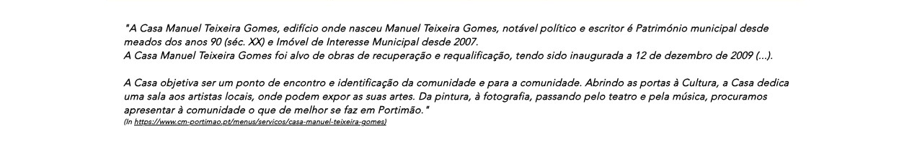
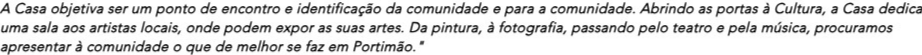

"A Casa Manuel Teixeira Gomes, edifício onde nasceu Manuel Teixeira Gomes, notável político e escritor é Património municipal desde meados dos anos 90 (séc. XX) e Imóvel de Interesse Municipal desde 2007. A Casa Manuel Teixeira Gomes foi alvo de obras de recuperação e requalificação, tendo sido inaugurada a 12 de dezembro de 2009 (...). A Casa objetiva ser um ponto de encontro e identificação da comunidade e para a comunidade. Abrindo as portas à Cultura, a Casa dedica uma sala aos artistas locais, onde podem expor as suas artes. Da pintura, à fotografia, passando pelo teatro e pela música, procuramos apresentar à comunidade o que de melhor se faz em Portimão."


Rua Júdice Biker, n.º 18500-701 PORTIMÃO
Tel.: 282 480 492
Tlm.: 92 724 63 18
E-mail: casa.mtgomes@cm-portimao.pt
Entrada Livre (Aberta todo o ano)
Museu de Portimão
O Museu de Portimão, na sua Exposição de Longa Duração intitulada "PORTIMÃO — TERRITÓRIO E IDENTIDADE", inclui a coleção Manuel Teixeira Gomes (séculos XIX a XX).